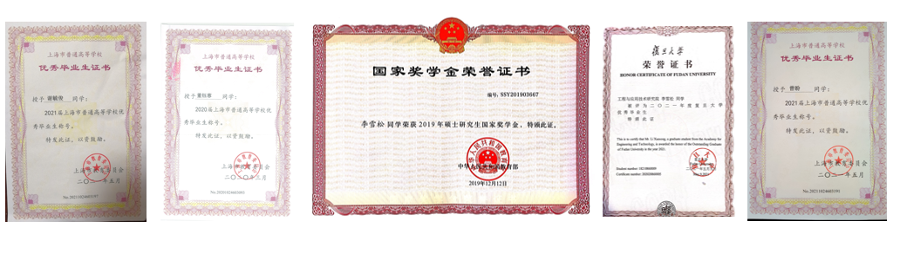

教书育人
培养博士和硕士研究生（已毕业，含共同培养）：博士生5名，硕士生5名。其中，3人获得上海市优秀毕业生（董钰蓉2020届、曾盼2021届、谢毓俊2021届），1人获得复旦大学优秀毕业生（李雪松2021届），多人获国家奖学金。
指导本科生科创项目以及指导本科生毕业设计11人。其中，2013级本科生董钰蓉获得“曦园项目”资助，并在《Optics Express》上以第一作者发表论文；2015级本科生张海钒获得腾飞书院“腾飞杯”大奖，“互联网+”创新创业大赛校二等奖，“曦园项目”优秀结题，复旦“苗圃计划”奖创金获奖者；2018级本科生魏湛琪、2020级本科生陈文怡、毛丹玥获得“曦园项目”资助。
承担本科生基础必修课《电磁场与电磁波》，承担研究生选修课程《有机电致发光材料与器件》，以及博士生与留学生的全英文课程《Plasma Medical Science》。
